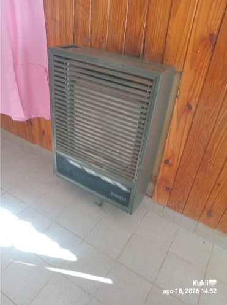

El monóxido de carbono es un gas altamente tóxico, incoloro, inodoro y sin sabor, que se produce por la combustión incompleta de materiales como gas, madera, carbón o queroseno. Se genera en artefactos de calefacción o cocina (estufas, calefones, calderos, cocina o brasero) en mal estado o con mala ventilación.
¿Cómo afecta al cuerpo?
Al respirar, el gas pasa a la sangre y se une a la hemoglobina, lo que impide que el oxígeno llegue a los órganos vitales. Entre los síntomas de intoxicación se encuentran el dolor de cabeza, los mareos y las náuseas.
El uso del zeppelin en nuestro paraje

En nuestro paraje utilizamos zeppelins que se extienden desde el tanque exterior hasta los artefactos de los hogares, que almacenan gas licuado. A diferencia de las ciudades con gas natural, estos tanques son físicamente más peligrosos ante una fuga debido a su densidad.
Consejos útiles para prevenir accidentes
- Si sentís olor a gas, llamá a un gasista.
- Ventilá diariamente tu casa (abrí ventanas y puertas).
- Cerrá las llaves de paso de los artefactos.
- Evitá hacer fuego y no fumes.
- Si te vas, cerrá las llaves de gas.
Hasta acá llegamos, por eso tenemos que tener cuidado con el gas, que produce muchos accidentes.
